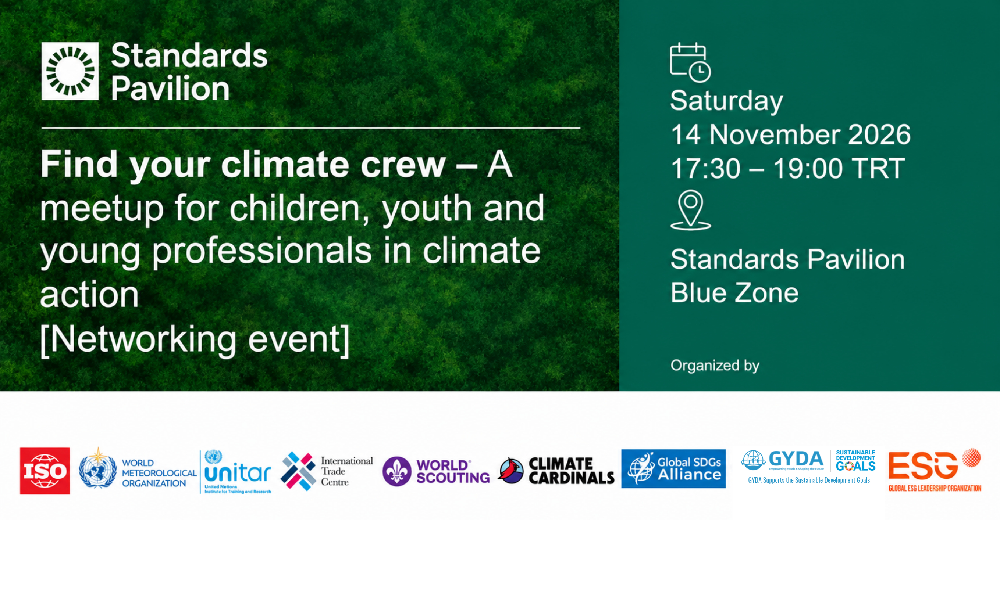
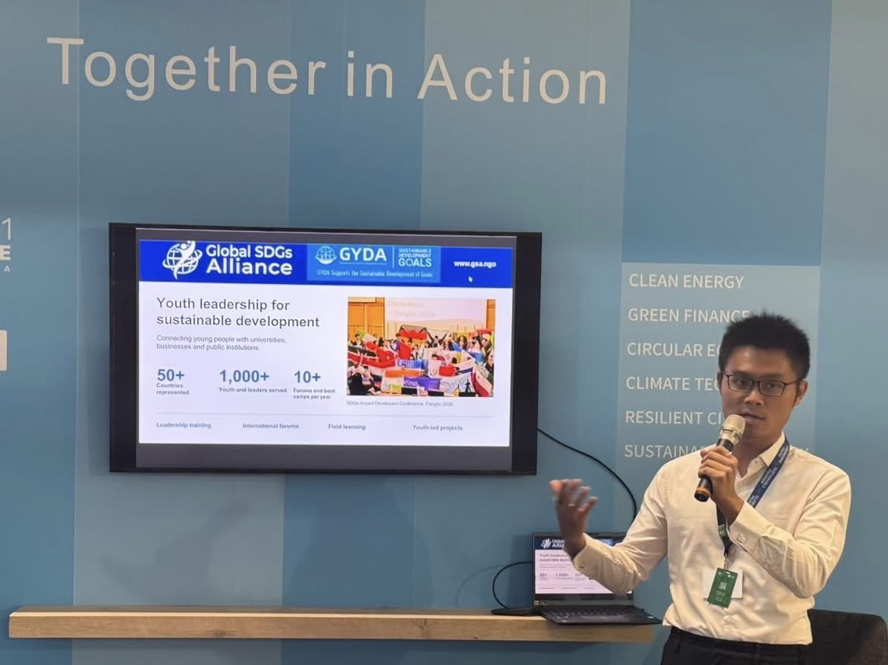
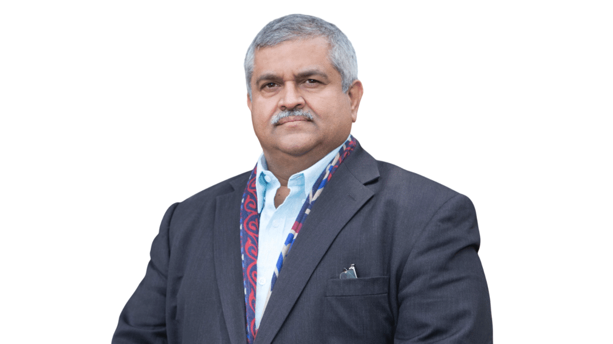
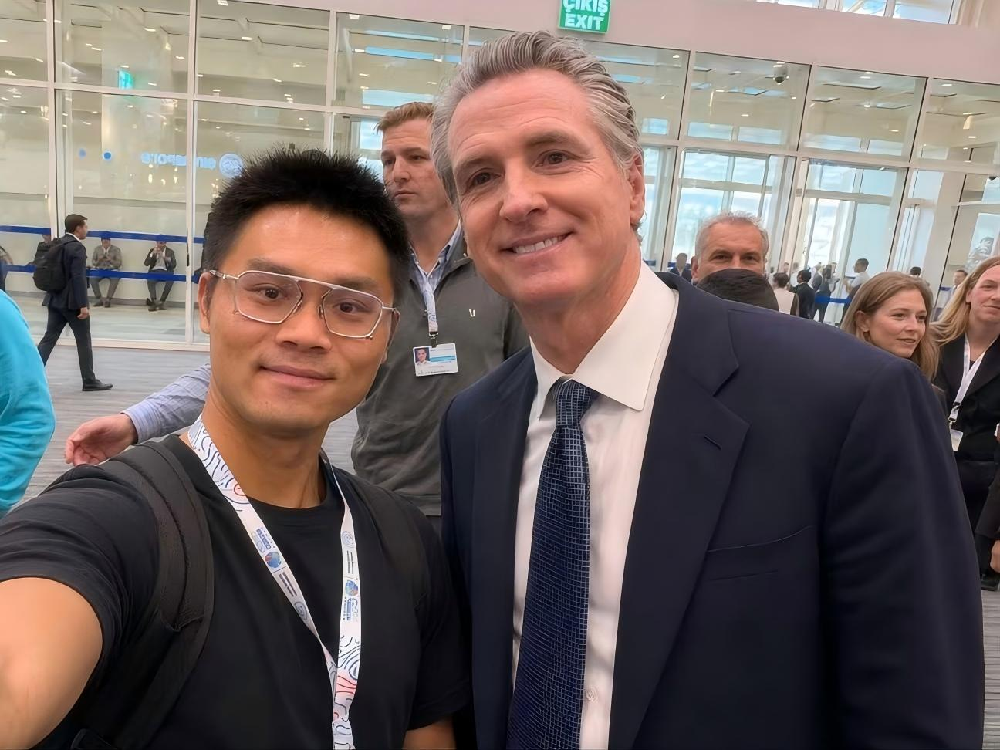
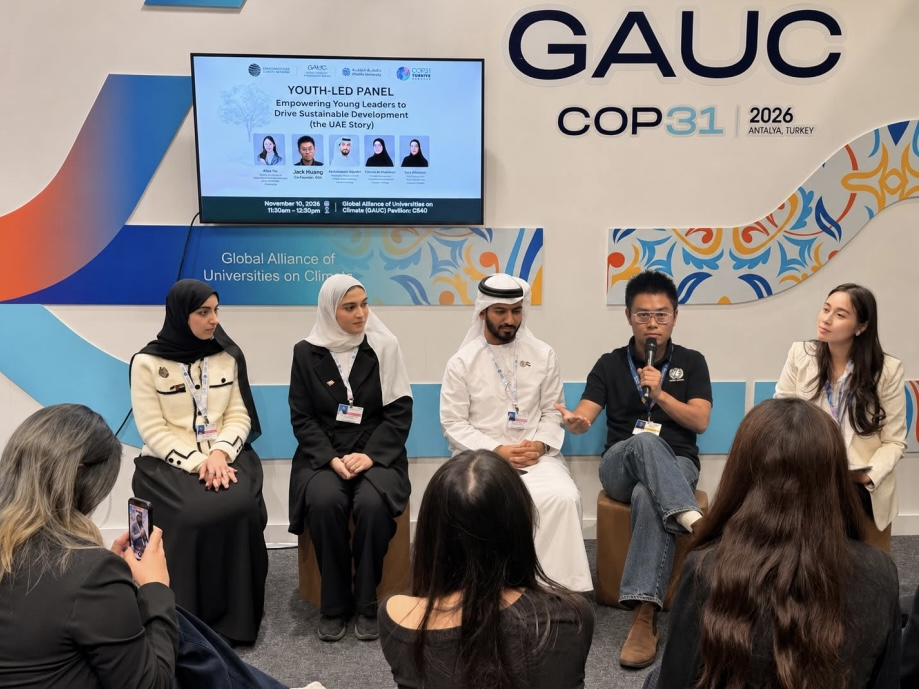
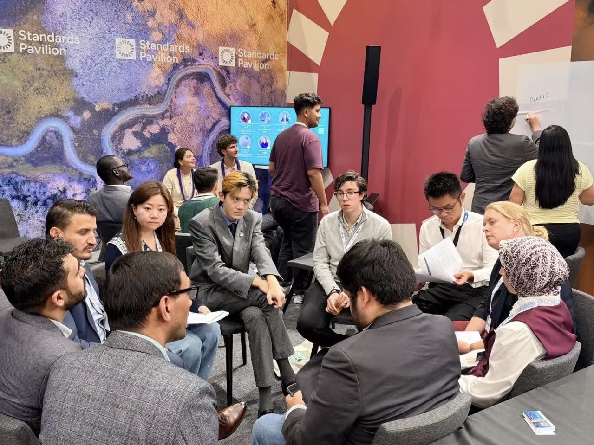

COP31 Antalya Youth Climate Action Salon: Advancing Climate Commitments Through Multilateral Cooperation
GYDA and international partners engage youth from over 30 countries in discussions on digital inclusion, youth development and climate action.

Location
COP31 Blue Zone, Antalya, Türkiye
Date
November 14, 2026
During COP31 in Antalya, Türkiye, a youth climate action salon themed “Delivering on Climate Commitments through Action” was held in the Blue Zone. The Global Youth Development Alliance (GYDA) and its Taipei City Office, Global SDGs Alliance (GSA), together with the World Meteorological Organization (WMO), the United Nations Institute for Training and Research (UNITAR), the International Trade Centre (ITC) and other international institutions, convened a closed-door dialogue for young people from more than 30 countries, focusing on digital inclusion, youth development and climate action. With an emphasis on implementation, the discussion explored how to bridge the digital divide, empower young people to turn technology into practical climate solutions, and integrate youth voices into multilateral governance.
Multilateral Collaboration: A Platform for Youth Participation in Climate Governance
As the official area of the UN Climate Change Conference, the COP31 Blue Zone brought together governments, international organisations and youth representatives for dialogue and collaboration. Drawing on this multilateral setting, the salon placed youth climate action within a framework of international cooperation and implementation, highlighting how international organisations, youth networks and local institutions can work together.

Convened by GYDA and GSA alongside WMO, UNITAR, ITC and other international institutions, the event brought together representatives from international organisations and global youth networks. Participants exchanged views on climate action and youth development across geographical, institutional and thematic boundaries, highlighting the role of young people as actors, innovators and communicators in climate governance.

The closed-door exchange emphasised implementation rather than advocacy alone. It considered digital access, youth capacity building, the development of climate solutions and cross-regional cooperation together, exploring how technical knowledge and international resources can more effectively reach young people and support lasting impact.
Key Participants: International Officials and Cross-Regional Youth Representatives

Satya S. Tripathi, former UN Assistant Secretary-General and Director of the United Nations Environment Programme’s New York Office, was among the distinguished guests. Drawing on his experience in environmental and sustainable development affairs, he discussed youth climate action, intergenerational dialogue and multilateral cooperation with representatives from different countries and regions.

California Governor Gavin Newsom also participated in COP31 in Antalya, bringing attention to the role of state-level climate policy and international cooperation. His presence at COP31 provided a broader policy context for discussions on youth engagement and climate action.
Jean Felix EBO’O, President of APC from Cameroon, participated as a representative of international civil society, bringing an African regional perspective and experience of youth action in the Global South. His contribution helped extend the discussion beyond any single regional experience.
John Kamulegeya, an environmental writer and climate storyteller from Uganda, took part in the youth climate action workshop, sharing frontline climate narratives and observations. Oliver Rieche, a UK carbon rights expert; Lincoln, a youth representative from Singapore; and Eda, a youth representative from Türkiye, also contributed to thematic exchanges in GSA side events and workshops. Their participation enriched the dialogue with professional and youth perspectives.
Issue Focus: Bridging the Digital Divide and Turning Technology into Climate Solutions

Participants observed that the digital divide concerns more than access to devices and connectivity: it also reflects inequalities in skills, data, platforms and opportunities for participation. For young people, access to digital tools, open data and international cooperation can determine whether climate ideas become replicable and scalable local actions.
Young participants discussed digital skills, open data sharing, cross-regional collaboration and support for youth-led projects. They emphasised that young people should be designers, implementers and communicators of climate solutions, not simply recipients of climate policy. Linking digital tools with local needs can support emissions reduction, ecosystem restoration, climate education, early warning and green employment.
The discussions shifted the emphasis from “why act” to “how to act.” Participants highlighted the importance of closer cooperation among international institutions, youth networks, businesses and civil society to help youth-led climate initiatives develop beyond one-off events into sustained, measurable outcomes.
Youth Voices: Integrating Intergenerational Dialogue into Multilateral Governance

The activities highlighted young people’s agency in multilateral governance. Youth voices should not only be heard but integrated into agenda-setting, programme design and delivery. Through closed-door exchanges, workshops and conversations in the Blue Zone, young representatives engaged with international organisation officials, institutional leaders and peer networks on the issues and solutions that matter to them.
The long-term value of youth climate action depends not only on the scale of a single event but also on durable participation mechanisms. GYDA and GSA aim to continue connecting digital inclusion, youth capacity building and climate project implementation through international cooperation networks, supporting replicable and measurable action across regions.
The youth climate action salon demonstrated how multilateral cooperation can connect global climate commitments with local solutions. By improving access to digital tools and widening opportunities for young people to participate, such initiatives can help translate dialogue into practical results for communities.
About the Global Youth Development Alliance
The Global Youth Development Alliance (GYDA) is a non-profit association registered in Paris under the French Law of 1901. With a global network of offices and partners, GYDA works to empower young people through international exchange, leadership development, digital capabilities and cooperation with public institutions. Its activities support youth participation in sustainable development and international governance.